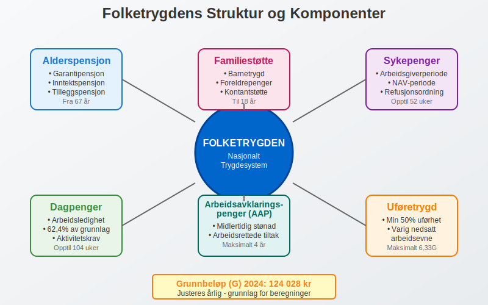
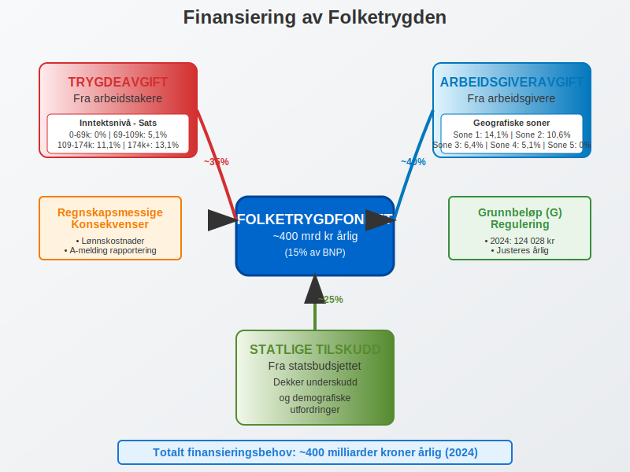
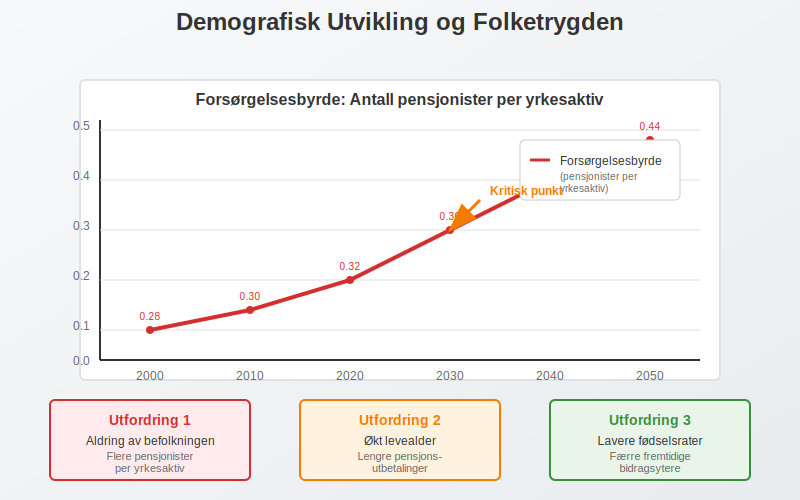

Folketrygden er Norges nasjonale trygdesystem som sikrer økonomisk trygghet for alle som bor eller arbeider i Norge. Dette omfattende systemet er en hjørnestein i den norske velferdsstaten og har betydelige implikasjoner for både privatpersoner og bedrifter når det gjelder regnskap og økonomisk planlegging.
Hva er Folketrygden?
Folketrygden er et obligatorisk, offentlig trygdesystem som ble etablert i 1967 og erstatte flere tidligere ordninger. Systemet bygger på prinsippet om universell dekning, hvilket betyr at alle som bor eller arbeider i Norge har rett til ytelser fra folketrygden.

Hovedformål med Folketrygden
- Inntektssikring ved sykdom, uførhet, arbeidsledighet og alderdom
- Familiestøtte gjennom barnetrygd og foreldrepenger
- Helsehjelp gjennom refusjon av medisinske utgifter
- Rehabilitering og arbeidsrettede tiltak
Folketrygdens Hovedkomponenter
1. Alderspensjon
Alderspensjon er den største utgiftsposten i folketrygden og består av flere komponenter:
| Pensjonskomponent | Beskrivelse | Opptjeningsperiode |
|---|---|---|
| Garantipensjon | Minstepensjon for alle med minst 40 års botid | 16-66 år |
| Inntektspensjon | Basert på pensjonsgivende inntekt | 13-75 år |
| Tilleggspensjon | For inntekt over 1G (grunnbeløpet) | Varierer |
2. Sykepenger og Helserelaterte Ytelser
Sykepenger utgjør en betydelig del av folketrygdens utgifter og har direkte regnskapsmessige konsekvenser for arbeidsgivere:
- Arbeidsgiverperioden: De første 16 kalenderdagene betales av arbeidsgiver
- NAV-perioden: Fra dag 17 betales av NAV (opptil 52 uker)
- Sykepengegrunnlag: Maksimalt 6G (grunnbeløp)
For bedrifter er det viktig å forstå hvordan sykepenger påvirker arbeidsgiveravgift og lønnskostnader.
3. Dagpenger ved Arbeidsledighet
Dagpenger sikrer inntekt for arbeidsledige som oppfyller visse krav:
- Minsteinntekt: Minimum 1,5G siste kalenderår eller 3G siste 3 år (basert på grunnbeløpet)
- Dagpengeperiode: Opptil 104 uker (lengre for eldre arbeidstakere)
- Dagpengesats: 62,4% av dagpengegrunnlaget
4. Uføretrygd
Uføretrygd gis til personer med varig nedsatt arbeidsevne:
- Uføregrad: Minimum 50% nedsatt arbeidsevne
- Beregning: Basert på tidligere inntekt og uføregrad
- Maksimal ytelse: 6,33G per år (basert på grunnbeløpet)
Finansiering av Folketrygden
Trygdeopgjøret er det årlige oppgjøret av innbetalt trygdeavgift og beregnede ytelser i folketrygden. Les mer om Trygdeopgjøret.
Folketrygden finansieres gjennom tre hovedkilder som har direkte regnskapsmessige konsekvenser:

1. Trygdeavgift fra Arbeidstakere
Trygdeavgift betales av alle som har pensjonsgivende inntekt i Norge:
| Inntektsnivå | Trygdeavgiftssats |
|---|---|
| 0 - 69 050 kr | 0% |
| 69 051 - 109 650 kr | 5,1% |
| 109 651 - 174 500 kr | 11,1% |
| Over 174 500 kr | 13,1% |
Satser for 2024
2. Arbeidsgiveravgift
Arbeidsgiveravgift er en avgift arbeidsgivere betaler på lønn og andre ytelser til ansatte. Avgiften varierer geografisk:
| Sone | Avgiftssats | Geografisk område |
|---|---|---|
| Sone 1 | 14,1% | Oslo, Bærum, Asker |
| Sone 2 | 10,6% | Resten av Østlandet, Rogaland, Hordaland |
| Sone 3 | 6,4% | Trøndelag, Agder |
| Sone 4 | 5,1% | Nord-Norge, deler av Møre og Romsdal |
| Sone 5 | 0% | Finnmark, Nord-Troms |
3. Statlige Tilskudd
Staten dekker underskuddet i folketrygden gjennom årlige tilskudd fra statsbudsjettet.
Regnskapsmessige Implikasjoner
For Arbeidsgivere
Folketrygden har flere regnskapsmessige konsekvenser som må håndteres korrekt i bokføringen:
1. Arbeidsgiveravgift
Arbeidsgiveravgift må beregnes og bokføres for alle lønnsutbetalinger:
Debet: Lønnskostnad (arbeidsgiveravgift)
Kredit: Skyldig arbeidsgiveravgift
2. Sykepenger i Arbeidsgiverperioden
Sykepenger i arbeidsgiverperioden bokføres som ordinær lønnskostnad:
Debet: Lønnskostnad (sykepenger)
Kredit: Bank/Kontanter
3. Refusjon fra NAV
Når NAV refunderer sykepenger, bokføres dette som en reduksjon i lønnskostnader:
Debet: Fordring NAV
Kredit: Lønnskostnad (refusjon sykepenger)
Rapportering gjennom A-meldingen
A-meldingen er den månedlige rapporteringen til myndighetene som inkluderer:
- Lønnsinformasjon for alle ansatte
- Beregnet arbeidsgiveravgift
- Trygdeavgift trukket fra ansatte
- Forskuddstrekk i skatt
Grunnbeløpet (G) - Folketrygdens Målestokk
Grunnbeløpet (G) er en sentral størrelse i folketrygden som justeres årlig og brukes til å beregne ytelser og avgifter. For en dyptgående forklaring av grunnbeløpets rolle og anvendelse, se vår omfattende guide til grunnbeløpet.
| År | Grunnbeløp (G) | Endring |
|---|---|---|
| 2024 | 124 028 kr | +7,8% |
| 2023 | 118 620 kr | +6,9% |
| 2022 | 111 477 kr | +3,5% |
| 2021 | 106 399 kr | +2,6% |
Betydning av G-regulering
G-reguleringen påvirker:
- Pensjonsnivåer og andre trygdeytelser
- Frikort og skattefrie beløp
- Maksimale dagpengesatser
- Uføretrygd og andre erstatninger
Folketrygdens Rolle i Norsk Økonomi
Makroøkonomisk Betydning
Folketrygden utgjør en betydelig del av norsk økonomi:
- Utgifter: Cirka 400 milliarder kroner årlig (2024)
- BNP-andel: Omtrent 15% av Norges BNP
- Sysselsetting: Direkte og indirekte sysselsetting i offentlig sektor
Demografiske Utfordringer
Norge står overfor demografiske endringer som påvirker folketrygden:
- Aldring av befolkningen: Flere pensjonister per yrkesaktiv
- Levealder: Økt levealder krever lengre pensjonsutbetalinger
- Fødselsrater: Lavere fødselsrater reduserer fremtidig arbeidsstyrke

Internasjonale Aspekter
EØS-avtalen og Trygdekoordinering
Norge er bundet av EØS-avtalen som sikrer:
- Portabilitet av pensjonsrettigheter
- Likebehandling av EØS-borgere
- Koordinering med andre lands trygdesystemer
Bilaterale Trygdeavtaler
Norge har trygdeavtaler med flere land utenfor EØS:
- USA: Koordinering av pensjon og uføretrygd
- Canada: Gjensidig anerkjennelse av opptjeningstid
- Australia: Portabilitet av alderspensjon
Fremtidige Reformer og Utvikling
Pensjonssystemet
Flere reformer er under vurdering:
- Levealdersjustering: Automatisk justering basert på levealder
- Fleksibel pensjon: Mulighet for gradvis pensjonering
- Opptjeningsmodell: Endringer i hvordan pensjon tjenes opp
Digitalisering
NAV arbeider kontinuerlig med digitalisering:
- Selvbetjening: Flere tjenester tilgjengelig online
- Automatisering: Redusert saksbehandlingstid
- Datadeling: Bedre koordinering mellom offentlige etater
Praktiske Råd for Bedrifter
Compliance og Etterlevelse
For å sikre korrekt håndtering av folketrygd-relaterte forpliktelser:
- Implementer robuste systemer for beregning av arbeidsgiveravgift
- Hold deg oppdatert på endringer i satser og regler
- Dokumenter alle beregninger for revisjonsformål
- Bruk profesjonelle regnskapssystemer som håndterer kompleksiteten
Regnskapsmessig Oppfølging
- Månedlig avstemming av arbeidsgiveravgift og trygdeavgift
- Korrekt klassifisering av lønnskostnader og avgifter
- Oppfølging av refusjoner fra NAV
- Dokumentasjon av alle folketrygd-relaterte transaksjoner
Konklusjon
Folketrygden er et komplekst og omfattende system som berører alle aspekter av norsk samfunns- og næringsliv. For bedrifter er det avgjørende å forstå systemets regnskapsmessige implikasjoner og sikre korrekt håndtering av relaterte forpliktelser.
Systemets universelle karakter og omfattende dekning gjør det til en av verdens mest generøse trygdeordninger, men også til en av de mest kostbare. Fremtidige demografiske utfordringer krever kontinuerlige tilpasninger og reformer for å sikre systemets bærekraft.
For regnskapsførere og bedriftsledere er det essensielt å holde seg oppdatert på endringer i folketrygden, da disse direkte påvirker lønnskostnader, arbeidsgiveravgift og andre regnskapsmessige forhold som må rapporteres gjennom A-meldingen og andre offentlige rapporter.